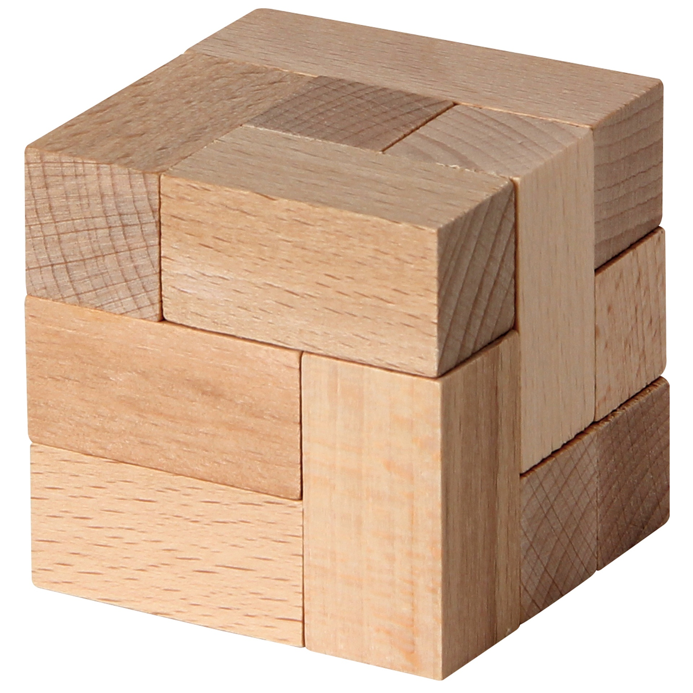

<!DOCTYPE html>
<html>

<head lang="en">
  <meta http-equiv="X-UA-Compatible" content="IE=edge" />
  <meta charset="UTF-8" />
  <title>Webvis 2D annotations API example</title>
  <!-- Please replace URL with your own webvisURL -->
  <script src="https://demo.threedy.io/repo/webvis/webvis.js?next"></script>
  <style>
    html {
      width: 100%;
      height: 100%;
    }

    body {
      font-family: "robotoregular", "Helvetica Neue", Helvetica, Arial,
        "sans-serif";
      font-size: 10pt;
      -webkit-user-select: none;
      -moz-user-select: none;
      -ms-user-select: none;
      user-select: none;
      -webkit-tap-highlight-color: rgba(0, 0, 0, 0);
      -webkit-touch-callout: none;
      width: 100%;
      height: 100%;
      margin: 0;
      padding: 0;
      background-image: -o-linear-gradient(bottom, #dddddd 85%, #cccccc 100%);
      background-image: -moz-linear-gradient(bottom,
          #dddddd 85%,
          #cccccc 100%);
      background-image: -webkit-linear-gradient(bottom,
          #dddddd 85%,
          #cccccc 100%);
      background-image: -ms-linear-gradient(bottom,
          #dddddd 85%,
          #cccccc 100%);
      background-image: linear-gradient(bottom, #dddddd 85%, #cccccc 100%);
      overflow: hidden;
    }

    .poi {
      height: 25px;
      width: 25px;
      background-color: rgb(236, 222, 91);
      border-radius: 50%;
      display: inline-block;
      text-align: center;
      position: absolute;
    }
  </style>
</head>

<body>
  <webvis-viewer></webvis-viewer>
  <script>

    /**
     * initialize function
     * - adds a simple cube and enables it
     * - creates the PoIs (Points of Interest)
     * - registers a listener to update the PoIs if the view changes
     */
    async function init() {

      // Get the context object from the webvis-viewer element.
      const webvisComponent = document.querySelector('webvis-viewer');
      const webvisContext = await webvisComponent.requestContext();
        
      console.log("Viewer is created...DONE");

      // add box and enable it
      const rootNode = webvisContext.add("urn:x-i3d:shape:box");
      await webvisContext.setProperty(rootNode, "enabled", true);
      
      // create the HTML elements representing the POIs (Point of interests)
      this.createAnnotations(rootNode,webvisContext);
    }

    /**
     * creates the HTML elements representing the POIs.
     * 
     * @param {number} - The id of the cube-node.
     */
    function createAnnotations(nodeId,webvisContext) {
      // the simple cube is has an edge length of 1 with the center at [0,0,0],
      // therefore the left-front-lower corner is at [-0.5, -0.5, -0.5]
      // and the right-back-upper corner at [0.5, 0.5, 0.5]
     
      const label = `This corner <b>0</b>`;
      const pdf = `<iframe src="i3dhub-logo.pdf" width="400" height="400"></iframe>`;
      const img = ``;
      const vid = `<iframe width="560" height="315" src="https://www.youtube.com/embed/mGM1zRz9eW8" title="YouTube video player" frameborder="0" allow="accelerometer; autoplay; clipboard-write; encrypted-media; gyroscope; picture-in-picture; web-share" allowfullscreen></iframe>`;
      
      const x = -0.5, y = -0.5, z = -0.5;
      const x1 = -0.5, y1 = -0.5, z1 = 0.5;
      const x2 = -0.5, y2 = 0.5, z2 = -0.5;
      const x3 = 0.5, y3 = -0.5, z3 = 0.5;
      
      webvisContext.createAnnotation(nodeId, img, true, [x, y, z], [x*0.2, y*0.2, z*0.2]);
      webvisContext.createAnnotation(nodeId, label, true, [x1, y1, z1], [x1*0.2, y1*0.2, z1*0.2]);
      webvisContext.createAnnotation(nodeId, pdf, true, [x2, y2, z2], [x2*0.2, y2*0.2, z2*0.2]);
      webvisContext.createAnnotation(nodeId, vid, true, [x3, y3, z3], [x3*0.2, y3*0.2, z3*0.2]);
    }

    init();
  </script>
</body>

</html>